Nardoto Editor
Nardoto EditorO seu agente de IA monta.
O editor entrega o vídeo.
Veja como funciona: você pede o vídeo, o Studio Lite monta e o editor entrega.
O Nardoto Editor é grátis para baixar. Ligado ao Nardoto Studio, ele recebe o vídeo montado pelo agente que você já usa e exporta no seu computador. Sem marca-d'água e sem limite de exportação.
Versão mais recente · Windows 10 e 11 (64 bits)
Vídeos feitos com o Nardoto Studio
Pedidos no chat, montados pelo agente e entregues pelo Nardoto Editor.
Os vídeos tocam pelo YouTube, na qualidade que a sua conexão aguentar. O vídeo exportado sai na resolução do projeto.
Por dentro do Nardoto Editor
Um editor completo, grátis e sem marca-d'água. Clique em qualquer imagem para ver de perto.

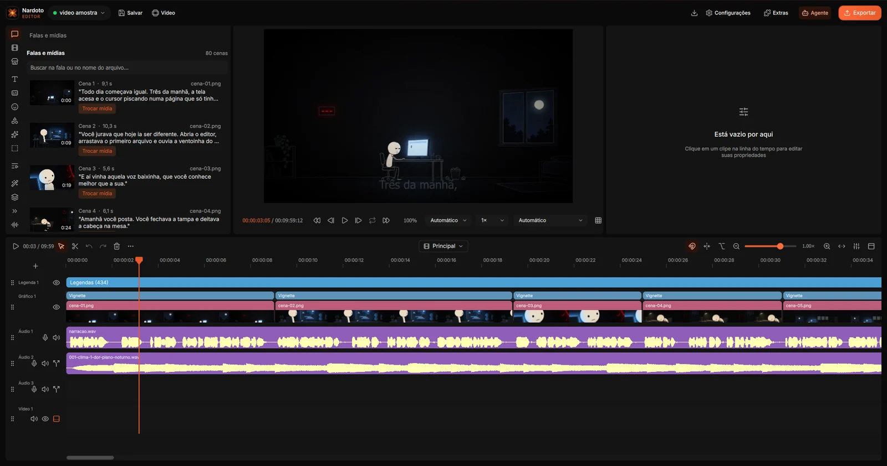
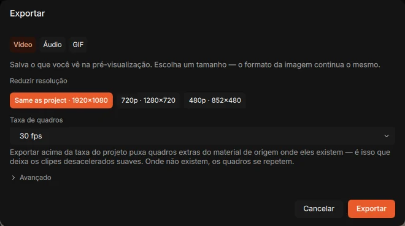
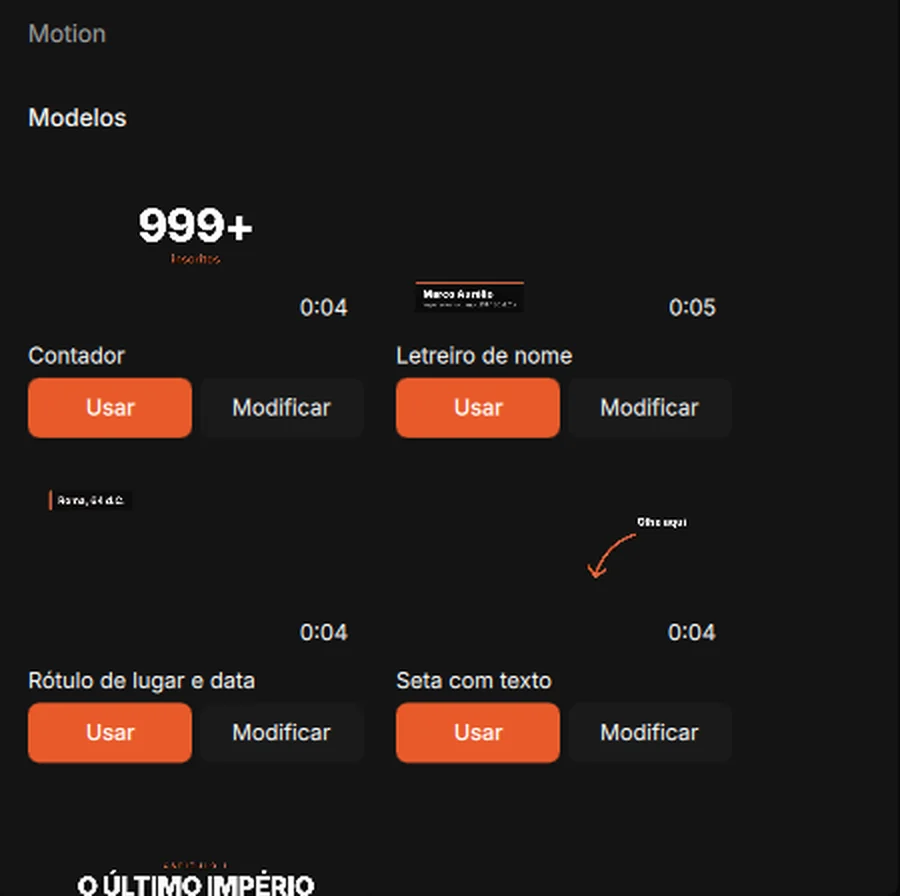
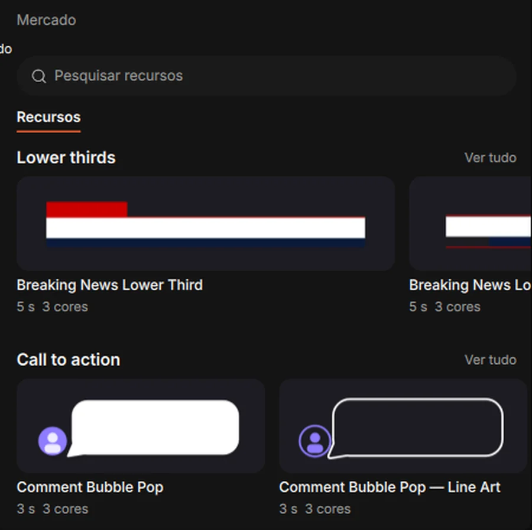
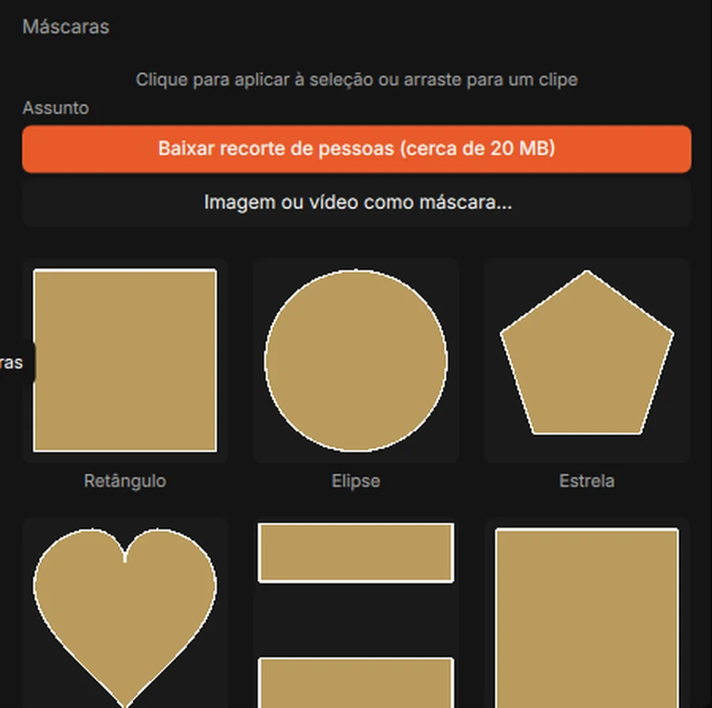
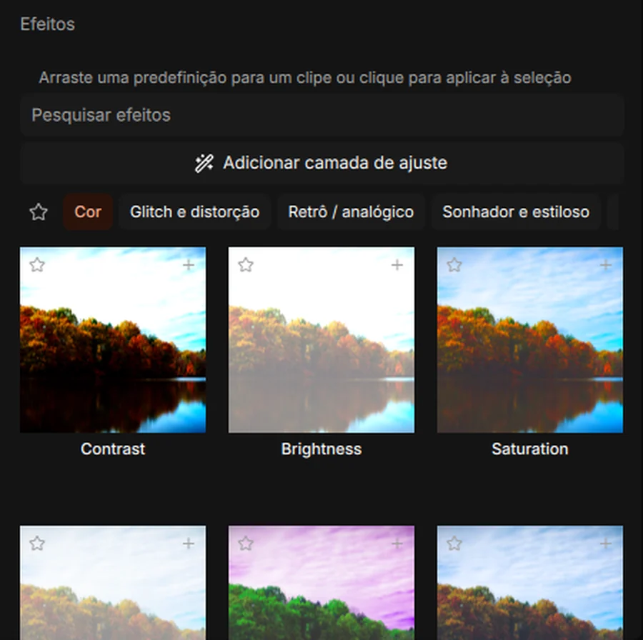
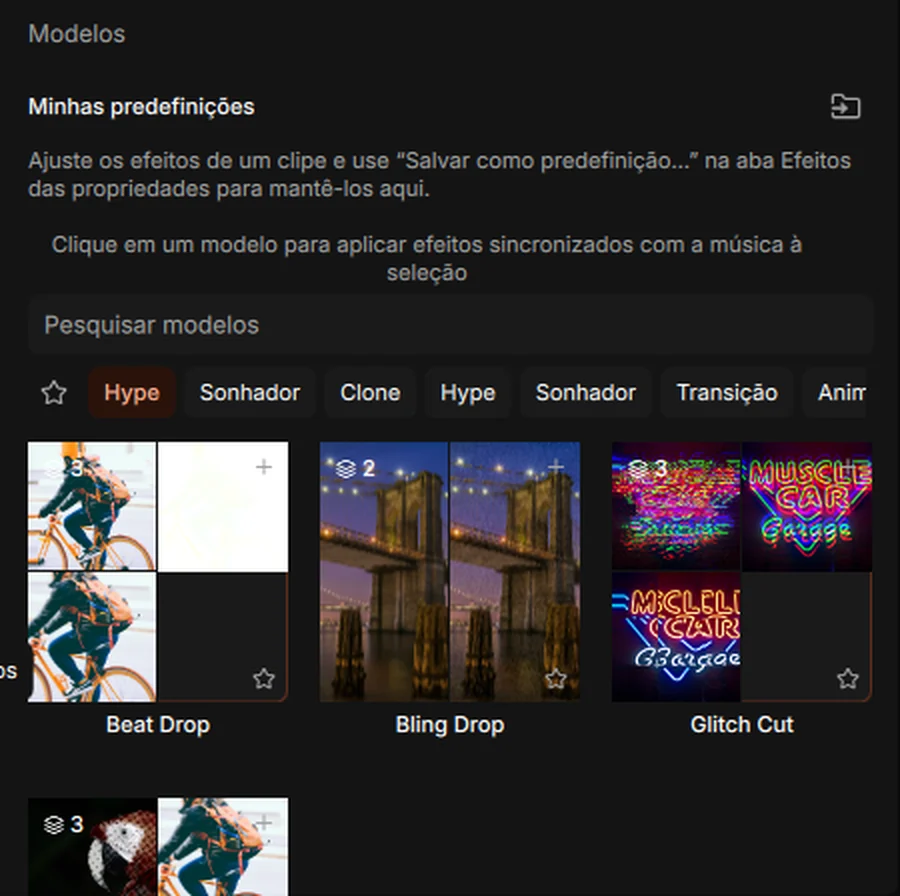
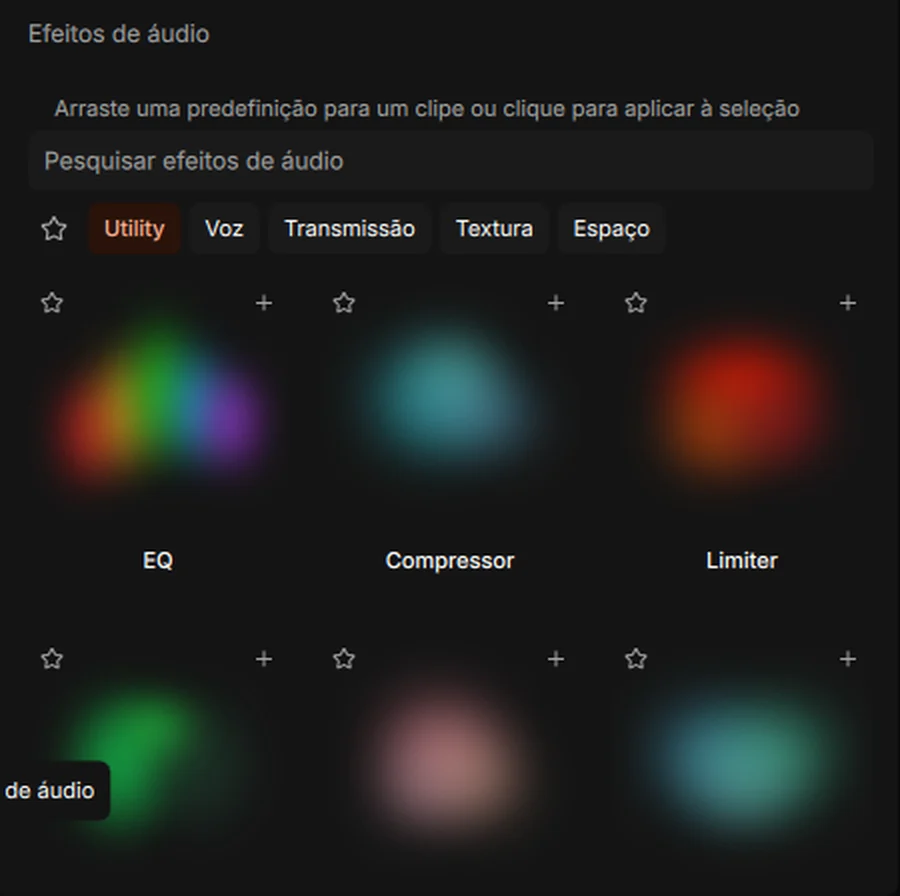
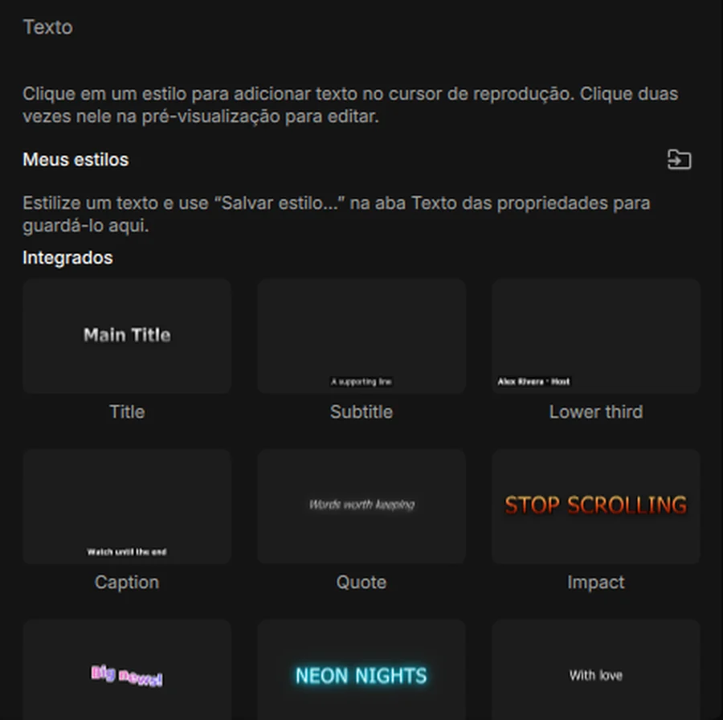
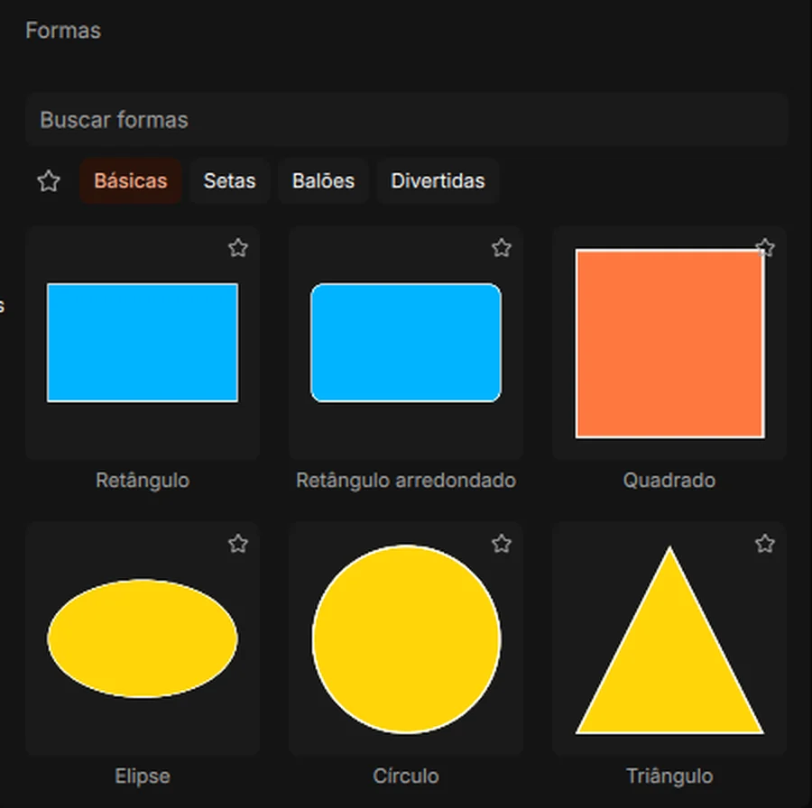
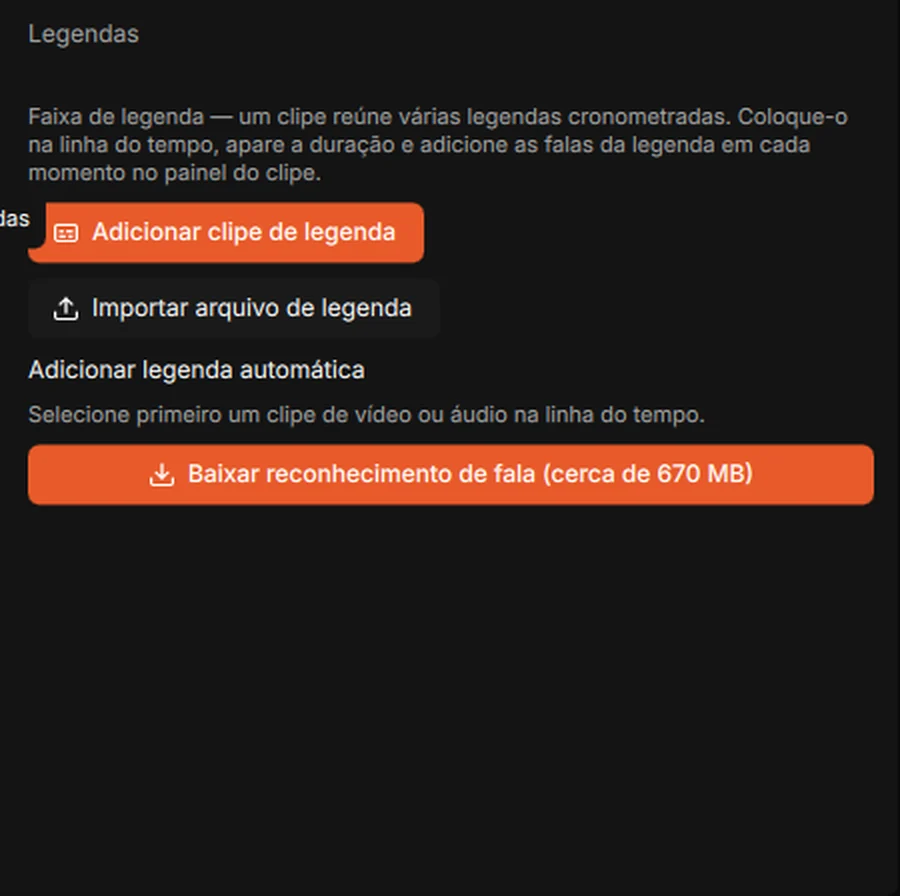
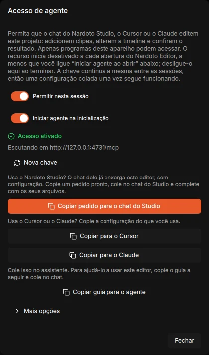
Nardoto Editor
- Grátis, sem marca-d'água
- Sem limite de exportação
- Seus arquivos ficam no seu PC
- Código aberto
Grátis, e feito para
andar com o Nardoto Studio.
O editor é a mesa de montagem. Quem pensa o vídeo é o Nardoto Studio: você conecta nele o agente de IA que já usa, como Claude, Codex ou Gemini, e pede o vídeo no chat. O agente escreve, busca as mídias, gera a voz e monta tudo no editor. Você confere, ajusta e exporta.
Dá para abrir e editar na mão sem o Studio, mas é com ele junto que o editor funciona de verdade.
Por dentro do Nardoto Studio Lite
Vídeo no automático, com edição profissional e dinâmica. Ilimitado e sem marca-d'água.


Nardoto Studio Lite
- Vídeos no automático, do roteiro à montagem
- Edição profissional e dinâmica
- Ilimitado e sem marca-d'água
- Monta no Nardoto Editor ou no CapCut
Tudo o que um vídeo precisa
Da primeira cena até o arquivo pronto para subir.
Timeline com várias faixas
Vídeo, imagem, áudio, legenda e animação em camadas. Corte, mova e ajuste cada clipe do jeito que você já conhece.
Legenda a partir da fala
O editor ouve a narração e escreve a legenda sozinho. Depois é só ajustar o estilo.
Efeitos e transições
Efeitos acelerados pela placa de vídeo, transições entre cenas e animação de posição, escala e opacidade.
Motion graphics e títulos
Títulos animados, textos e formas, além de clipes com fundo transparente e animações Lottie.
Áudio no capricho
Mixagem por faixa e remoção de ruído. Pelo chat do Studio, a música ainda abaixa sozinha quando a narração entra.
Exporta no seu computador
O vídeo é gerado na sua máquina, sem fila e sem envio para servidor. Sem limite de tamanho ou de quantidade.
Baixe e comece agora
Instalação em um minuto. Depois é só fazer o seu cadastro grátis.
macOS
A versão para Mac está em preparação e ainda não tem data. Esta página é atualizada quando ela sair.
Em brevePerguntas frequentes
É grátis mesmo? Qual é a pegadinha?
O editor é grátis: não tem versão paga, não tem marca-d'água e não tem limite de exportação. Ele foi feito para trabalhar junto com o Nardoto Studio, que é onde o seu agente de IA cria e monta o vídeo.
Preciso criar conta?
Sim, um cadastro grátis. A edição e a exportação acontecem no seu computador, e os seus arquivos não saem dele.
Meu computador roda?
Ele foi pensado para rodar bem em máquinas comuns. Usa a placa de vídeo quando ela ajuda e cria versões leves dos vídeos pesados para a prévia não engasgar. O arquivo final sai sempre na qualidade original.
Preciso do Nardoto Studio para usar?
Para aproveitar o editor, sim. Ele abre e edita sozinho, mas foi pensado para receber o vídeo montado pelo Studio. É no Studio que você conecta o seu agente de IA, pede o vídeo no chat e acompanha a produção.
Qual agente de IA eu posso conectar?
O que você já usa. O Nardoto Studio conversa com Claude, Codex, Gemini e outros agentes de linha de comando, e é por ele que o agente comanda o editor.
Por que o código é aberto?
O Nardoto Editor é baseado no Drift, da CutWire Studios, e segue a licença GPL-3.0. O código-fonte completo está no GitHub, aberto para quem quiser ver ou contribuir.
Como recebo as versões novas?
Por enquanto, baixando o instalador de novo nesta página. Ele sempre entrega a versão mais recente e mantém os seus projetos.